정보통신기사(구) (2010-03-07 기출문제)
1과목: 디지털 전자회로
1. TTL과 비교하여 MOS 논리회로의 특징이 아닌 것은?
- 입력 임피던스가 높다.
- 소비전력이 적다.
- 잡음여유도가 크다.
- TTL과의 혼용이 매우 용이하다.
(정답률: 74%)

2. 다음은 C급 동조 증폭기이다. 회로의 Q를 10이라고 할 때, 이 증폭기의 대역폭은 약 얼마인가? (단, C=470[pF], L=2[μH])
- 215[kHz]
- 380[kHz]
- 430[kHz]
- 519[kHz]
(정답률: 61%)
3. 그림과 같은 브리지 정류회로에 관한 설명으로 틀린 것은? (단, 다이오드는 이상적인 경우이다.)
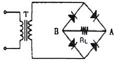
- RL에는 A에서 B쪽으로 전류가 흐른다.
- RL에서 흐르는 전류는 전파 정류된 파형이다.
- 다이오드에 걸리는 역방향 전압의 최대치는 변압기(T) 2차 전압 최대치의 2배이다.
- RL에 걸리는 전압의 최대치는 변압기(T) 2차 전압의 최대치이다.
(정답률: 67%)
4. 그림과 같은 회로에서 Vo는 약 얼마인가?
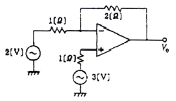
- 2[V]
- 3[V]
- 4[V]
- 5[V]
(정답률: 69%)
5. 주파수 변조에서 S/N비를 개선하기 위한 방법으로 적합하지 않은 것은?
- 최대 주파수편이를 적게 한다.
- 변조지수 β를 크게 한다.
- 프리엠퍼시스 회로를 사용한다.
- 주파수 대역폭을 크게 한다.
(정답률: 47%)
6. 다음 중 FM 복조시 리미터의 작용을 할 수 있는 것은?
- Forster-seeley 검파기
- Quadrature 검파기
- Ratio detector
- Envelope detector
(정답률: 68%)
7. 그림의 이상적인 연산 증폭기에서 입력단자에 0.2[V]의 전압을 입력시켰다면 출력전압은? (단, R1=1[kΩ], R2=9[kΩ])
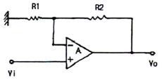
- 2[V]
- -2[V]
- 0.02[V]
- -0.02[V]
(정답률: 56%)
8. 다음 중 수정 발진기의 특징과 거리가 먼 것은?
- 수정편의 Q가 매우 크다.
- 수정편이 발진을 만족시키는 유도성 영역이 매우 넓다.
- LC 발진기보다 발진이 안정적이다.
- 수정 진동자는 기계적으로 안정하다.
(정답률: 58%)
9. 다음 로직 회로(logic circuit)의 출력은?
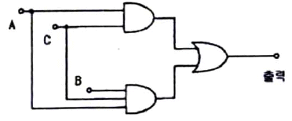
- AB
- AC
- ABC
- AB+AC
(정답률: 67%)
10. 논리회로를 구성하고자 할 때, IC에 내장되어 있는 AND, OR, NAND, NOR, NOT 등의 논리소자 중에서 선택적으로 퓨즈를 절단하는 방법으로 사용자가 직접 기록할 수 있는 PAL 또는 PLA와 같은 IC는 다음 중 어디에 속하는가?
- PLC
- PLD
- PLL
- RAM
(정답률: 62%)
11. 다음 병렬공진회로에서 공진주파수 fo의관계식으로 옳은 것은?
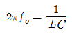
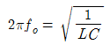
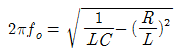
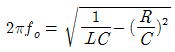
(정답률: 67%)
12. 다음 중 조합 논리회로에 속하지 않는 것은?
- 인코더
- 디코더
- 비안정 멀티바이브레이터
- PLD(Programmable Logic Device)
(정답률: 68%)
13. 그림 (a)의 회로에 그림 (b)와 같은 전압을 입력측에 인가할 때, 정상 상태에서의 출력전압 VO는?
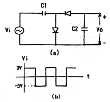
- 3[V]의 진폭을 갖는 부(負)의 펄스
- 3[V]의 진폭을 갖는 정(正)의 펄스
- -6[V]의 직류전압
- +3[V]의 직류전압
(정답률: 63%)
14. 다음 중 4개의 Flip-Flop으로 구성된 업카운터의 모듈러스(modulus)와 이 카운터로 계수할 수 있는 최대계수는?
- 모듈러스 : 32, 최대계수 : 16
- 모듈러스 : 16, 최대계수 : 15
- 모듈러스 : 16, 최대계수 : 16
- 모듈러스 : 32, 최대계수 : 15
(정답률: 74%)
15. 그림과 같은 직선 검파회로에서 diagonal clipping이 생기는 주된 이유는?
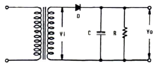
- 시정수 RC가 매우 작기 때문
- 시정수 RC가 매우 크기 때문
- 부하가 매우 크기 때문에
- 부하가 매우 작기 때문에
(정답률: 72%)
16. ECL(Emitter Coupled Logic) 회로의 설명으로 틀린 것은?
- 회로의 출력은 각각 OR, NAND 출력이 된다.
- 표준형 TTL에 비해 동작속도가 빠르다.
- MOS에 비해 소비전력이 일반적으로 크다.
- 기본회로의 구성은 차동증폭기로 이루어진다.
(정답률: 55%)
17. 저주파 증폭기의 출력에서 기본파 전압이 50[V], 제2고조파 전압이 4[V], 제3고조파 전압이 3[V]일 경우, 이 증폭기의 종합 왜율은?
- 5[%]
- 10[%]
- 15[%]
- 20[%]
(정답률: 72%)
18. 그림과 같은 회로의 입력으로 스텝 전압이 인가할 때, 출력전압의 형태는? (단, A는 반전 이상적인 연산증폭기이다.)
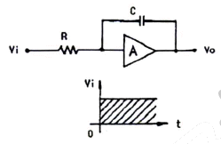
- 펄스 형태의 전압
- 스텝 형태의 전압
- 크기가 직선적으로 변하는 형태의 전압
- 크기가 지수함수적으로 변하는 형태의 전압
(정답률: 62%)
19. 다음 중 정류회로에서 다이오드를 여러 개 병렬로 접속시킬 경우의 특성은?
- 과전압으로부터 보호할 수 있다.
- 과전류로부터 보호할 수 있다.
- 정류기의 역방향 전류가 감소한다.
- 부하출력에서 맥동률을 감소시킬 수 있다.
(정답률: 81%)
20. 다음 그림과 같은 회로의 전달 특성으로 적합한 것은? (단, VR1 < VR2)
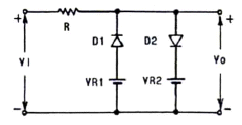
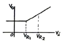
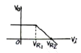
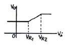
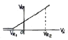
(정답률: 78%)
2과목: 정보통신 시스템
21. 다음 중 기저대역(Baseband) 통신에 대한 설명으로 옳은 것은?
- 변조과정 없이 기본적인 신호의 대역폭만으로 행하는 통신이다.
- FM 통신을 위해 반송파에 싣는 과정을 의미한다.
- 아날로그 신호의 통신을 의미한다.
- 다중화 방식으로 TDM 방식을 의미한다.
(정답률: 69%)
22. 정보통신 시스템에서 평균고장시간을 나타내는 것은?
- MTBF
- MTTR
- MBTR
- MMTR
(정답률: 63%)
23. 다음 네트워크 토폴로지 중 CATV 기술을 이용한 광대역 LAN에서 주로 사용되는 것은?
- Star형
- Tree형
- Ring형
- Mesh형
(정답률: 60%)
24. 개방형 시스템(Open-system)에 대한 설명으로 가장 거리가 먼 것은?
- 응용프로그램이 수정 없이 모든 시스템에 완전히 이식되어야 한다.
- 원격의 상이한 시스템의 상이한 응용프로그램과 연동이 용이해야 한다.
- 사용자 접속에 있어서 호환성이 유지되어야 한다.
- 특정 소프트웨어나 하드웨어에 종속되지 않는 시스템을 말한다.
(정답률: 65%)
25. 다음 중 네트워크에서 병목현상과 구성요소의 고장문제에 가장 효과적으로 대응할 수 있는 것은?
- 망(Mesh)형
- 성(Star)형
- 링(Ring)형
- 버스(Bus)형
(정답률: 64%)
26. 다음 중 HDLC의 프레임 구조가 순서대로 옳게 나열된 것은?
- FLAG, ADDRESS, CONTROL, DATA, FCS, FLAG
- FLAG, CONTROL, ADDRESS, DATA, FCS, FLAG
- FLAG, CONTROL, DATA, ADDRESS, FLAG, FCS
- FLAG, DATA, CONTROL, ADDRESS, FCS, FLAG
(정답률: 77%)
27. 서로 다른 전송매체를 갖는 네트워크를 상호 연결하는데 사용되며 데이터링크 계층까지 LAN을 접속시키는 것은?
- 리피터(Repeater)
- 브리지(Bridge)
- 라우터(Router)
- 게이트웨어(Gateway)
(정답률: 56%)
28. 디지털 통신에 있어서 음성압축기술, 음성품질 및 주파수자원 활용의 상관관계를 바르게 설명한 것은?
- 음성압축 비율이 높아져 비트율이 낮아지면, 음성품질도 향상되고 주파수 활용도도 높아진다.
- 음성압축 비율이 높아져 비트율이 낮아지면, 음성품질도 저하되고 주파수 활용도도 낮아진다.
- 음성압축 비율이 높아져 비트율이 낮아지면, 음성품질은 향상되나 주파수 활용도도 낮아진다.
- 음성압축 비율이 높아져 비트율이 낮아지면, 음성품질도 저하되나 주파수 활용도도 높아진다.
(정답률: 55%)
29. 다음 중 패킷 교환망에 대한 일반적인 설명으로 적합하지 않은 것은?
- 패킷을 전송하는데 오버헤드가 없다.
- 비교적 높은 신뢰성을 유지할 수 있다.
- 고품질의 전송 실현이 가능하다.
- 패킷의 다중화를 통해서 전송 효율을 향상시킬 수 있다.
(정답률: 68%)
30. 다음 중 FDDI에 대한 설명으로 옳은 것은?
- 버스 토폴로지상에서 토큰제어방식으로 동작한다.
- IEEE 802.3 CSMA/Cd의 프로토콜을 사용한다.
- 광섬유를 전송매체로 하는 100[Mbps]의 전송속도를 제공한다.
- STP 케이블을 이용한 공장자동화 용도로 주로 사용된다.
(정답률: 56%)
31. 공통선신호(No.7) 방식의 특징으로 적합하지 않은 것은?
- 다양한 서비스 제공 능력을 갖고 있어 새로운 서비스 도입에 융통성이 크다.
- 기능별로 모듈화된 계층구조로 이기종 시스템간의 상호접속이 용이하다.
- 한 그룹의 트렁크에 관한 정보를 동일채널로 전송한다.
- 시분할 디지털 교환기에 사용한다.
(정답률: 57%)
32. 다음 중 회선교환(circuit switching) 방식의 특징이 아닌 것은?
- 전용 전송로를 가진다.
- 고정된 대역폭으로 데이터를 전송한다.
- 데이터 전송에 오버헤드가 없다.
- 데이터의 전송속도 및 코드변환이 가능하다.
(정답률: 48%)
33. 다음 중 통신망구성에서 트래픽 변동이나 과부하 등에 대해 첪분한 내력과 통신망의 확장이나 기능변경에 대처하는 기능은?
- 네트워크의 융통성
- 정보전달의 투명성
- 정보의 통합성
- 통신품질의 동일성
(정답률: 76%)
34. 회선을 측정한 결과 통화신호의 세기 레벨이 -4[dBm]이고, 잡음세기의 레벨이 -50[dBm]일 때 S/N비는?
- 24[dB]
- 32[dB]
- 42[dB]
- 46[dB]
(정답률: 71%)
35. PCM 방식에서 선형 양자화시 비트를 증가시키면 신호대잡음비(S/N)가 개선된다. 1비트 증가시 약 몇 [dB] 개선되는가?
- 2[dB]
- 3[dB]
- 6[dB]
- 9[dB]
(정답률: 65%)
36. 프로토콜의 주요 구성 요소 중에서 데이터 형식, 부호화 및 신호 레벨을 나타내는 것은?
- 구문(syntax)
- 의미(semantic)
- 타이밍(timing)
- 주소(address)
(정답률: 76%)
37. 다음 중 위성 중계기에서 사용하는 고전력 증폭기는?
- FET
- TWTA
- TR
- CMOS
(정답률: 63%)
38. 다음 중 CSMA/CD 방식에 관한 설명으로 틀린 것은?
- 버스 토폴로지에 이용된다.
- 제록스사가 개발한 방식이다.
- 동축케이블을 사용할 수 있다.
- 단말기 사이에 신호 충돌이 없다.
(정답률: 62%)
39. 다음 중 ITU-T의 DTE/DCE 인터페이스에 관한 규정으로 전화와 음성 대역의 아날로그 전화 회선용으로 권고한 것은?
- X 시리즈
- V 시리즈
- I 시리즈
- T 시리즈
(정답률: 59%)
40. 광섬유 케이블에서 레일리(Rayleigh) 산란손실과 파장과의 관계가 옳은 것은?
- 손실은 파장의 2승에 반비례한다.
- 손실은 파장의 2승에 비례한다.
- 손실은 파장의 4승에 반비례한다.
- 손실은 파장의 4승에 비례한다.
(정답률: 70%)
3과목: 정보통신 기기
41. TV 전파 사이의 빈틈인 수직귀선소거 시간을 이용하여 정보를 전송하는 것은?
- Telex
- Teletext
- Videotex
- HDTV
(정답률: 75%)
42. 다음 중 T1급 혹은 E1급 전용선을 사용하여 Network를 구축할 경우 이에 적합한 디지털 전송장비는?
- CSU
- MODEM
- CCU
- CODEC
(정답률: 64%)
43. 다음 중 지능(intelligent) 다중화기에 대한 설명으로 틀린 것은?
- 동기식 시분할 다중화기보다 전송효율이 좋지 않다.
- 실제 전송 데이터가 있는 터미널에만 시간폭을 할당한다.
- 통계적 시분할 다중화기라고도 한다.
- 동적인 시간폭의 배정이 가능한 방식이다.
(정답률: 60%)
44. 다음 중 팩시밀리의 문서나 그림 전송시 흑 또는 백의 화소 길이에 대하여 가장 효율적인 압축방식은?
- HDLC coding
- EBCDIC coding
- Run length coding
- Data compression coding
(정답률: 61%)
45. RS-232C 25핀 표준 인터페이스에서 수신(RD)에 해당되는 핀은?
- 1번
- 2번
- 3번
- 4번
(정답률: 55%)
46. 다음 중 팩시밀리(Facsimile)의 주사방법에 해당하는 것은?
- 원통주사
- 입체주사
- 삼각주사
- 원주사
(정답률: 77%)
47. 위성통신에서 위성을 효과적으로 운영하기 위한 다원접속 방법이 아닌 것은?
- WDMA
- TDMA
- FDMA
- CDMA
(정답률: 72%)
48. 다음 CATV의 구성 요소 중 가입자 설비로 컨버터, 홈 터미널, TV 수상기 등으로 구성된 것은?
- 전송계
- 단말계
- 센터계
- 분배계
(정답률: 66%)
49. 모뎀의 송신부에서 데이터 패턴을 랜덤하게 하여 신호의 스펙트럼이 넓게 분포되도록 함으로써 수신측에서 등화기가 최적의 상태를 유지하도록 하는 것은?
- 자동이득제어(AGC)
- 대역제한여파기(BLF)
- 스크램블러(Scrambler)
- AFC(자동주파수조절기)
(정답률: 72%)
50. MHS의 구성요소 중 이용자로부터 의뢰된 메시지를 MTA로 보내고 이용자에게 메시지 편집기능 등의 서비스를 제공하는 것은?
- UA
- MTS
- MS
- AU
(정답률: 63%)
51. 다음 중 CCTV의 기본 구성이 아닌 것은?
- 촬상 장치
- 전송 장치
- 교환 장치
- 표시 장치
(정답률: 71%)
52. 모뎀에서 통신회선의 상태가 좋지 않아 고속의 전송이 불가능할 때 전송 속도를 스스로 감소시키는 것은?
- Polling
- Fall back
- Calling
- Scanning
(정답률: 78%)
53. 다음 중 QAM 방식에 대한 설명으로 옳지 않은것은?
- 진폭편이 변조방식과 위상편이 변조방식을 혼합한 변조방식이다.
- 4위상과 2진폭의 변조로 3비트를 한 번에 전송할 수 있다.
- 제한된 전송대역 내에서 고속의 데이터 전송이 가능하다.
- QAM 방식에서 최대 전송 속도는 4800[bps]이다.
(정답률: 62%)
54. 다음 중 마이크로그래픽 단말기에 대한 설명으로 옳은 것은?
- 가로 세로의 좌표를 지시하여 펜이 이동할 때 선을 긋는다.
- 문자 도형 그림으로 구성된 정보를 보관, 검색하기 위해 작은 면적에 대량의 정보를 수록한다.
- 전자빔을 편향하여 형광면 위에 문자나 도형을 나타나도록 한다.
- 가는 핀 모양의 도트를 문자 패턴대로 때려서 문자를 구성한다.
(정답률: 65%)
55. 다음 중 ISDN의 서비스에서 OSI 하위 3계층까지의 기능을 수행하는 것은?
- High layer
- Tele service
- Bearer service
- Telecommunication service
(정답률: 69%)
56. 다음 중 팩시밀리(FAX)에 대한 설명으로 틀린 것은?
- 빛을 이용하여 화상정보를 전기신호로 바꾸어서 전송하는 원리의 기술이다.
- 송신측에서 압축된 데이터를 전송하면 수신측에서 원본 그대로 재현할 수 있다.
- 전송속도 및 사용회선 등의 변천에 따라 그 등급이 FⅠ, FⅡ, FⅢ, FⅣ로 발전되어 왔다.
- FAX의 압축부호화 방식으로는 MH, MMR 등이 있다.
(정답률: 59%)
57. 다음 중 무선통신 단말기의 기능과 거리가 먼 것은?
- RF신호 변복조
- 통화채널 설정
- 위치 등록
- 음성코딩 및 디코딩
(정답률: 57%)
58. ITU가 제정한 화상회의 관련 권고안 H 시리즈 중에서 LAN 전용회선을 통한 화상회의 표준규격은?
- H.221
- H.231
- H.320
- H.323
(정답률: 63%)
59. 다음 중 무선통신기기에서 주파수 합성기에 사용되는 것은?
- 증폭기
- 주파수분배기
- PLL
- 카운터
(정답률: 62%)
60. 다음 중 위성통신의 통신위성체 구성에 대한 설명으로 옳지 않은 것은?
- 통신위성은 통신기기부와 공통기기부로 대별되고 통신기기부는 안테나계와 추진계로 구성된다.
- 텔리메트리 명령계는 위성상태를 보고하는 텔리메트리 신호를 송신한다.
- 전원 발생부는 태양전지 판넬로 전원을 생성한다.
- 중계기는 수신부, 신호증폭부, 송신부 등으로 구성된다.
(정답률: 50%)
4과목: 정보전송 공학
61. 이동통신 채널에서 일어나는 현상(효과)이 아닌 것은?
- 도플러 효과
- 채널 간섭 현상
- 페이딩 현상
- 전리층 반사 현상
(정답률: 80%)
62. HDLC 프로토콜에서 플래그의 사용목적으로 가장 적합한 것은?
- 주소를 나타내기 위해
- 링크를 초기설정하기 위해
- 프레임의 동기를 맞추기 위해
- 데이터전송 동작모드를 결정하기 위해
(정답률: 79%)
63. HDLC에서 프레임 체크 시퀀스로 가장 적합한 부호는?
- CRC
- Hamming
- Gray
- ASCII
(정답률: 66%)
64. 구스 헨첸 이동(Goos Hanchen Shift)과 가장 관련이 깊은 것은?
- 형태분산
- 다중모드
- 구조분산
- 재료분산
(정답률: 58%)
65. 병렬전송과 비교한 직렬전송의 특징으로 틀린 것은?
- 전송 속도가 빠르다.
- 전송로의 비용이 저렴하다.
- 직ㆍ병렬 변환 회로가 필요하다.
- 데이터 전송 시스템에 주로 사용된다.
(정답률: 62%)
66. 디지털 변조 방식 중에서 오류확률이 가장 낮은 것은?
- QPSK
- OQPSK
- 4진 QAM
- 4진 DPSK
(정답률: 64%)
67. 프레임검사시퀀스(FCS)의 검사 범위가 아닌 것은?
- 시작 flag
- 주소부(A)
- 제어부(C)
- 정보부(I)
(정답률: 61%)
68. 음성신호 S(t) = 3 cos 500t를 8비트 PCM을 이용하여 양자화 했을 경우 신호대 양자화 잡음비는?
- 44[dB]
- 50[dB]
- 56[dB]
- 64[dB]
(정답률: 47%)
69. FEC(Forward Error Correction) 코드에 대한 설명으로 적합하지 않은 것은?
- 역채널을 사용한다.
- 에러 정정 기능을 포함한다.
- 연속적인 데이터 전송이 가능하다.
- CRC 코드, 콘볼루션 코드 등이 이에 해당한다.
(정답률: 59%)
70. 광섬유 케이블의 고유한 손실에 속하지 않는 것은?
- 흡수손실
- 산란손실
- 접속에 의한 손실
- 구조의 불완전에 의한 손실
(정답률: 57%)
71. 링크를 가장 효율적으로 사용할 수 있으나 프레임 재순서화 기능이 요구되는 등 시스템 구현이 복잡한 단점을 가지고 있는 방식은?
- Simple ARQ
- Go back N ARQ
- Stop and Wait ARQ
- Selective Repeat ARQ
(정답률: 67%)
72. 피기백 응답(piggyback acknowledgement)에 대한 설명으로 가장 적합한 것은?
- 송신측이 일정한 시간 안에 수신측으로부터 ACK가 도착하지 않으면 에러로 간주하는 것이다.
- 송신측이 타임-아웃시간을 설정하기 위한 목적으로 내보낸 테스트 프레임에 대한 응답이다.
- 수신측이 에러를 검출한 후 재전송해야 할 프레임의 개수를 송신측에게 알려주는 응답이다.
- 수신측이 별도의 ACK를 보내지 않고 상대편으로 향하는 데이터 전문을 이용하여 응답하는 것이다.
(정답률: 46%)
73. 프로토콜(protocol)의 구성요소에 해당하지 않는 것은?
- 구문(Syntax)
- 트래픽(Traffic)
- 의미(Semantics)
- 타이밍(Timing)
(정답률: 79%)
74. PCM-32/TDM 방식의 전송속도 및 음성채널수로 맞는 것은?
- 전송속도 : 1.544[Mbps], 음성채널수 : 24
- 전송속도 : 1.544[Mbps], 음성채널수 : 32
- 전송속도 : 2.048[Mbps], 음성채널수 : 30
- 전송속도 : 2.048[Mbps], 음성채널수 : 32
(정답률: 57%)
75. 엔티티(entity) 간에 교환되는 프로토콜 데이터 유니트(PDU)가 가지는 제어정보가 아닌 것은?
- 주소
- 데이터 형식
- 에러검출 코드
- 프로토콜 제어정보
(정답률: 53%)
76. 전송용량이 64[kbps]인 디지털 전송로에 음성을 256개 레벨로 양자화하여 전송할 때 허용 가능한 최고주파수는?
- 4[kHz]
- 8[kHz]
- 64[kHz]
- 128[kHz]
(정답률: 45%)
77. HDLC 프레임에 대한 설명으로 틀린 것은?
- 제어영역은 프레임의 종류를 식별하기 위해 사용된다.
- 주소영역은 보통 8비트로 구성되며 프레임을 수신하거나 송신하는 부 스테이션을 식별하기 위해 사용된다.
- FCS는 플래그를 제외한 전달되는 프레임 내용에 대한 오류 검출을 위하여 사용되며, 사용 코드는 CRC 방식을 사용한다.
- 정보영역은 사용자 사이에 교환되는 데이터를 실어 보내게 되며 플래그 01111110을 포함한다.
(정답률: 54%)
78. Hamming 코드에서 총 전송비트수가 17비트일 때, 해밍 비트수와 순수한 정보 비트수는?
- 해밍 비트수 : 4, 정보 비트수 : 13
- 해밍 비트수 : 5, 정보 비트수 : 12
- 해밍 비트수 : 6, 정보 비트수 : 11
- 해밍 비트수 : 7, 정보 비트수 : 10
(정답률: 62%)
79. 전송로에 9600[kbps]의 데이터를 전송하는 경우 비트 오율이 5×10-7이라면 매 초 몇 개의 에러 비트가 발생하는가?
- 2.4개
- 4.8개
- 9.6개
- 12.0개
(정답률: 68%)
80. 동기식 전송방식에 대한 설명으로 적합하지 않은 것은?
- 송신측과 수신측은 동기되어 있으므로 동기문자 또는 특수 비트열의 사용이 필요하지 않다.
- 비동기(START-STOP) 방식보다 전송속도가 높다.
- 전송되는 글자들 사이에는 휴지기간을 두지 않는다.
- 송ㆍ수신측 모두 버퍼기억장치를 가지고 있어야 한다.
(정답률: 44%)
5과목: 전자계산기일반 및 정보통신설비기준
81. 프로그램에서 하나의 값을 저장할 수 있는 기억장소의 이름은?
- 함수
- 주석
- 변수
- 레이블
(정답률: 69%)
82. 16bit micro processor의 내부 신호 중 버스 중재(arbitration) 제어 신호에 해당하지 않는 신호명은?
- 버스 에러(Bus Error)
- 버스 리퀘스트(Bus Request)
- 버스 그랜트(Bus Grant)
- 버스 그랜트 Ack(Bus Grant Acknowledge)
(정답률: 61%)
83. 다음 중 Self Complement 코드에 해당하는 것은?
- 8421 코드
- Excess-3 코드
- Gray 코드
- 5421 코드
(정답률: 62%)
84. 프로그래머에 의한 명령 수행 순서의 변경 또는 프로그램의 수행 순서를 인스트럭션들이 배열된 순서와 다르게 수행할 수 있도록 하는 기능은?
- 함수 연산 기능
- 전달 기능
- 제어 기능
- 입출력 기능
(정답률: 59%)
85. 다음 2의 보수 표현으로 된 수의 계산 결과가 옳은 것은?
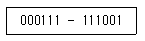
- 111001
- 011110
- 001110
- 010110
(정답률: 47%)
86. 사용자가 실제 기억장치보다 큰 기억장치를 사용할 수 있는 메모리 이용 기법은?
- 직접 메모리 액세스
- 가상 기억장치
- 캐시 기억장치
- 연관 기억장치
(정답률: 74%)
87. 프로그램 카운터와 명령의 주소부분을 더해 유효 주소로 결정하는 주소지정방식은?
- base addressing
- index addressing
- immediate addressing
- relative addressing
(정답률: 49%)
88. 연산장치(ALU)를 크게 2부분으로 분류하면?
- 산술연산장치와 기억장치
- 제어장치와 산술연산장치
- 산술연산장치와 논리연산장치
- 논리연산장치와 기억장치
(정답률: 55%)
89. 출력되는 불 함수의 값이 입력 값에 의해서만 정해지고 내부에 기억능력이 없는 논리회로는?
- 조합회로
- 순차회로
- 집적회로
- 혼합회로
(정답률: 45%)
90. 자기디스크에서 사용하는 CAV 방식의 단점으로 옳은 것은?
- 접근 속도의 저하
- 구동장치의 복잡화
- 디스크의 무게 증가
- 저장 공간의 낭비
(정답률: 63%)
91. 수급인의 정의로 가장 적합한 것은?
- 도급인으로부터 공사를 하도급받은 공사업자를 말한다.
- 하청인으로부터 공사를 도급받은 공사업자를 말한다.
- 발주자로부터 공사를 하도급받은 공사업자를 말한다.
- 발주자로부터 공사를 도급받은 공사업자를 말한다.
(정답률: 56%)
92. 정보통신공사의 설계ㆍ감리에 대한 설명으로 적합하지 않은 것은?
- 감리원은 설계도서 및 관련규정에 적합하도록 공사를 감리하여야 한다.
- 발주자는 용역업자에게 공사의 설계를 발주하여야 한다.
- 발주자는 감리업협회에 공사의 감리를 발주하여야 한다.
- 공사업자와 용역업자가 친족관계에 있는 경우에는 당해 공사에 관하여 공사와 감리를 함께 할 없다.
(정답률: 56%)
93. 방송통신위원회가 전기통신기본계획을 수립하고자 할 때 미리 관계행정기관의 장과 협의하여야 할 사항은?
- 전기통신의 이용효율화에 관한 사항
- 전기통신의 질서유지에 관한 사항
- 전기통신사업에 관한 사항
- 전기통신기술의 진흥에 관한 사항
(정답률: 47%)
94. 감리원의 배치기준에 있어서 특급감리원의 배치기준은?
- 총 공사금액 100억원 이상인 공사
- 총 공사금액 70억원 이상 100억원 미만인 공사
- 총 공사금액 30억원 이상 70억원 미만인 공사
- 총 공사금액 5억원 이상 30억원 미만인 공사
(정답률: 64%)
95. 정보통신공사업법의 목적으로 적합하지 않은 것은?
- 공공복리의 증진에 이바지
- 정보통신공사의 적절한 시공
- 정보통신공사업의 건전한 발전을 도모
- 정보통신공사의 도급 등에 관하여 필요한 사항을 규정
(정답률: 54%)
96. 정보통신공사업자가 품위의 유지, 기술의 향상, 공사 시공방법의 개량 기타 정보통신공사업의 건전한 발전을 위하여 방송통신위원회의 인가를 받아 설립한 것은?
- 정보통신공제조합
- 정보통신공사협회
- 정보통신기술협회
- 한국정보화진흥원
(정답률: 58%)
97. 시ㆍ도지사가 정보통신공사업의 등록을 반드시 최소하여야 하는 것은?
- 시정명령 또는 지시를 위반한 경우
- 하도급의 제한 규정에 위반하여 하도급한 경우
- 정보통신기술자를 공사현장에 배치하지 아니한 경우
- 타인의 등록증이나 등록수첩을 빌려서 사용한 경우
(정답률: 67%)
98. 방송통신위원회가 전기통신의 표준화를 추진하는 목적으로 가장 적합한 것은?
- 전기통신기술 개발의 촉진
- 효과적인 통신서비스 제공
- 통신시장의 건전한 발전 도모
- 전기통신의 건전한 발전과 이용자의 편의 도모
(정답률: 59%)
99. 다른 사람의 위탁을 받아 공사에 관한 조사ㆍ설계ㆍ감리ㆍ사업관리 및 유지관리 등의 역무를 수행하는 것은?
- 도급
- 하도급
- 용역
- 용역업
(정답률: 57%)
100. 전기통신역무를 제공받기 위하여 이용자가 관리ㆍ사용하는 구내통신선로설비, 단말장치 및 전송설비 등을 말하는 것은?
- 국선접속설비
- 사업용 전기통신설비
- 이용자 전기통신설비
- 자가 전기통신설비
(정답률: 67%)
TTL과의 혼용이 매우 용이한 이유는 MOS 논리회로와 TTL 논리회로가 전압 레벨이 서로 다르기 때문에, 두 회로를 직접 연결하면 신호가 제대로 전달되지 않는다. 하지만 MOS 논리회로와 TTL 논리회로를 연결하기 위한 인터페이스 회로를 사용하면 두 회로를 함께 사용할 수 있다. 이러한 인터페이스 회로는 MOS 논리회로의 입력 임피던스와 TTL 논리회로의 출력 전류를 맞춰주는 역할을 하기 때문에, 두 회로를 혼용하여 사용할 수 있다.